厨神系统
美食×系统文×创业
第一章 · 一碗面的代价
↓ 向下滑动开始阅读
场景一 · 至暗时刻
我盯着手机屏幕，雨水模糊了那行字——"经研究决定，终止对贵司的A轮投资"。三年，1825天，就这么一条消息，连个电话都不打。
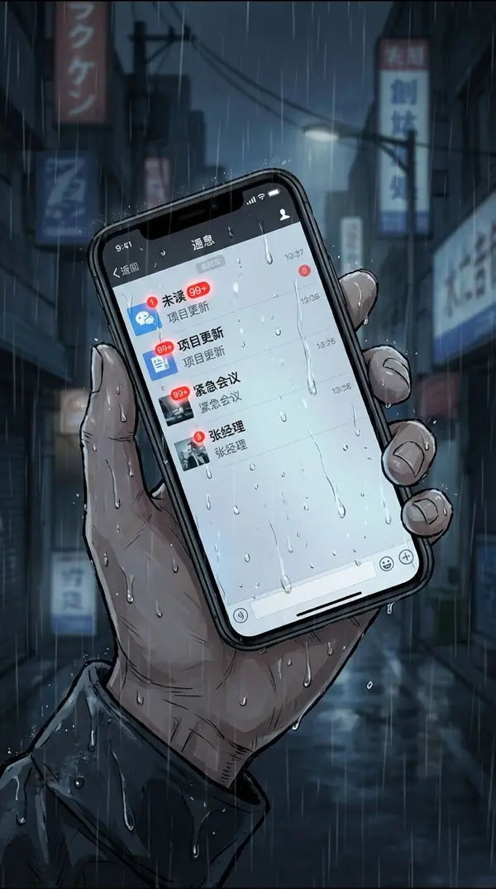
群里炸了锅。合伙人发了三个问号，技术总监说"江哥我房贷还没还完"。我把手机翻过去扣在手心，雨水顺着指缝往下淌。
第一次创业失败的时候我哭了三天。第二次，哭了三小时。这次？我只想找个地方吃碗面。人到中年的崩溃就是这么朴素。
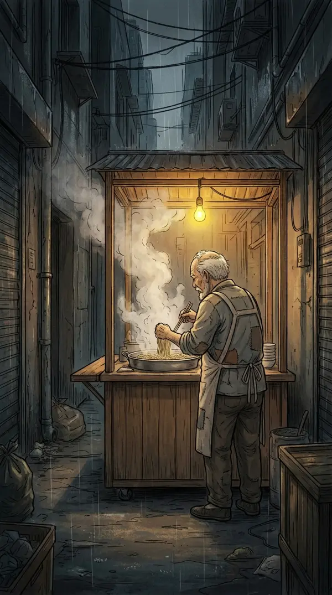
巷子尽头有一家连招牌都没有的面摊，就一口锅、一盏灯、一个白胡子老头。但那碗面冒出来的香气——我发誓，这辈子没闻过这么好闻的味道。
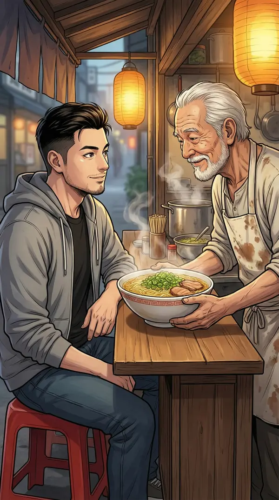
"小伙子，淋成这样，来碗面暖暖。"老头没问我要钱，就端了一碗过来。我也没客气，端起来就喝了一口汤——
第一口面的反应
A: 理性分析——"这汤……用了什么？我尝出了至少七种食材的层次"（黑客思维，拆解结构）
B: 纯感性——感动哭了，觉得这是人间最后的温暖
C: 商业嗅觉——"这碗面能卖88一碗，老板你知不知道你坐在金矿上"
→ 朱江基因：拆解系统、好奇"怎么做到的"
场景二 · 系统激活
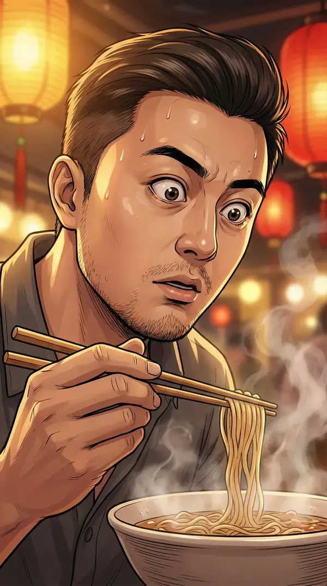
这汤不对劲。不是"好喝"那么简单——我的舌头像被打开了什么开关。牛骨、香茅、八角、花椒、一种我叫不出名字的东西……每一种味道都像代码一样清晰地排列在我脑子里。
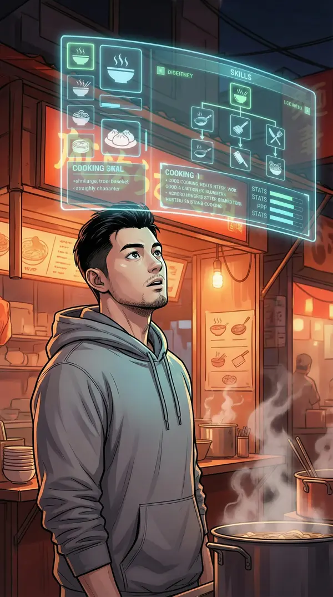
然后我眼前就炸开了一个界面。一个像游戏HUD一样的东西悬浮在我面前。我下意识回头看老陈——他还在那儿笑眯眯地擦碗，好像什么都没发生。
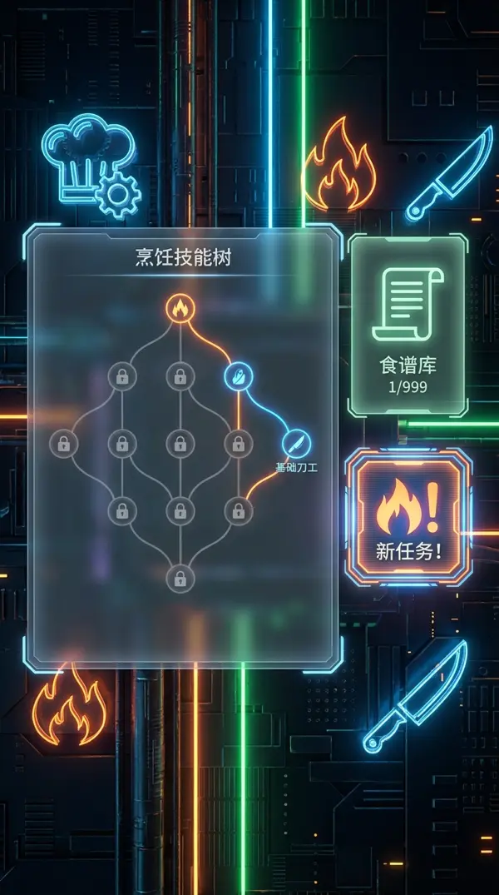
……泡面选手？我朱江堂堂一个写过十万行代码的人，在这个系统里是"泡面选手"？！
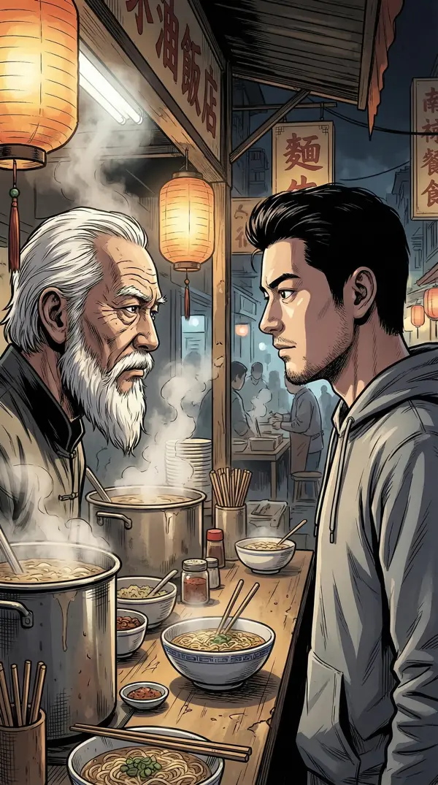
"你看到了？"老陈的声音突然变了，不再是慈祥老头，像是一个退休的将军在审视新兵。"四十年了，终于又有人能激活它。"
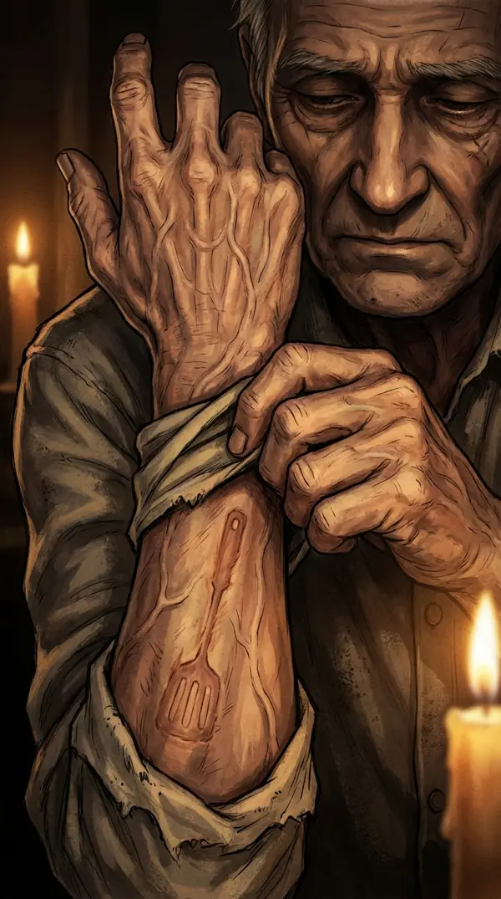
"这系统是福也是祸。它能让你成为这世上最好的厨师——但连续三天不做菜，你的味觉就会全部消失。永远。"他指了指自己的嘴，"我就是前车之鉴。二十年了，吃什么都像嚼蜡。"
接受系统？
A: "有意思。三天一做菜的deadline？我创业时天天通宵，这算什么。"（挑战型，不怕约束）
B: "等等，你说清楚，这东西有没有副作用说明书？"（谨慎型）
C: "我不要。我是做AI的，不是做饭的。"（拒绝）
→ 朱江面对新系统的态度：先接再说，干就完了
场景三 · 路边摊保卫战
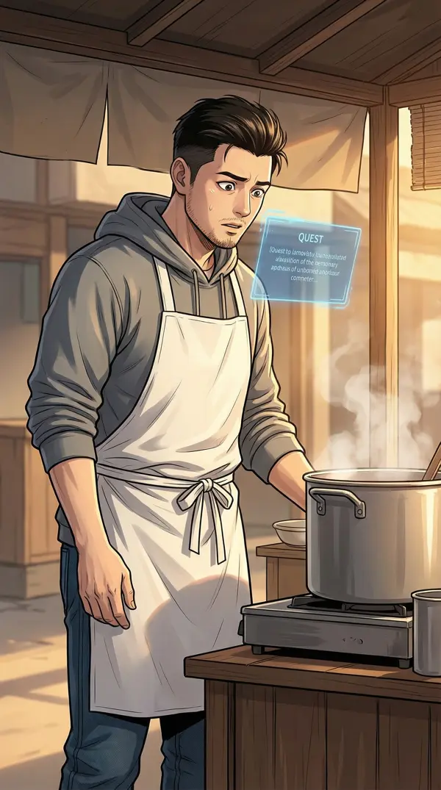
老头跑了。留了面摊、一口锅、和一张纸条："明天开始，自己干。跑不掉的。"
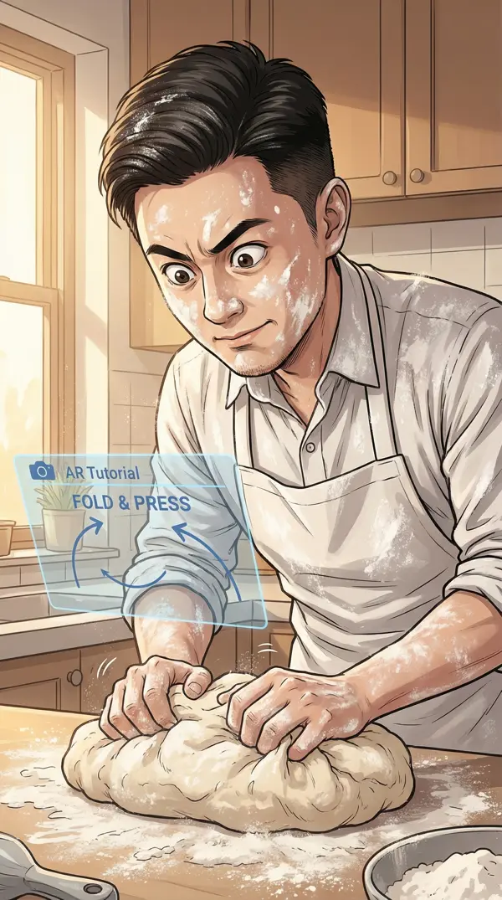
系统倒是贴心，在我眼前投射了一个AR教程。"取面粉500克，加水230毫升，揉至表面光滑。"听起来简单？我揉了二十分钟，那坨面像一个拒绝合作的创业伙伴——怎么揉都不光滑。
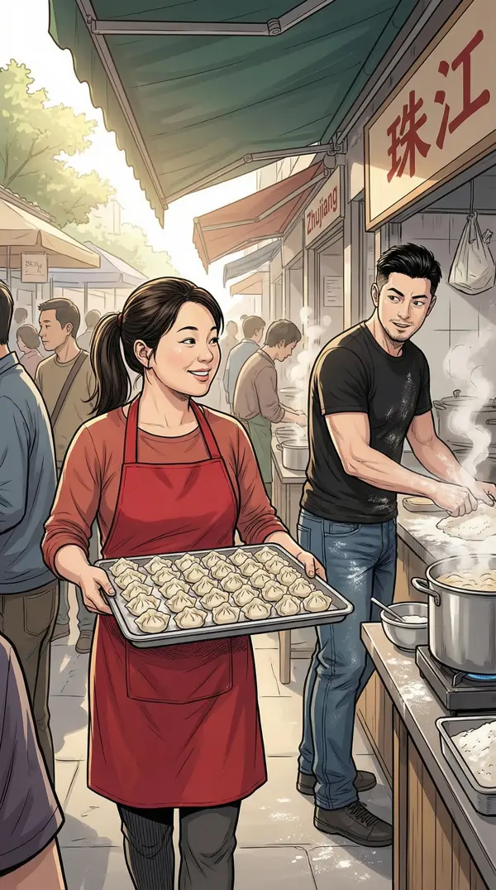
"新来的？"隔壁摊位的女孩靠过来，嘴角带着那种"看新人出丑"的微笑。"你那个面和得像水泥。""……你觉得还有救吗？""看你态度。"
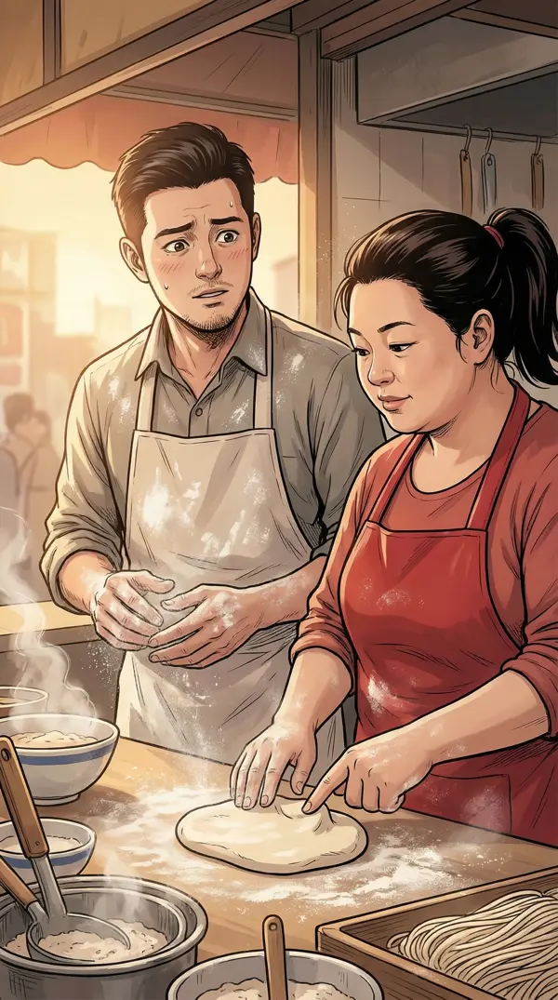
她叫林小鱼，在这条巷子卖了三年馄饨。她用三十秒诊断了我的问题："水多了，面粉少了，而且你揉的方向不对。"我一个写了十年代码的人，在和面这件事上输给了一个卖馄饨的。人生的bug就是这么出其不意。
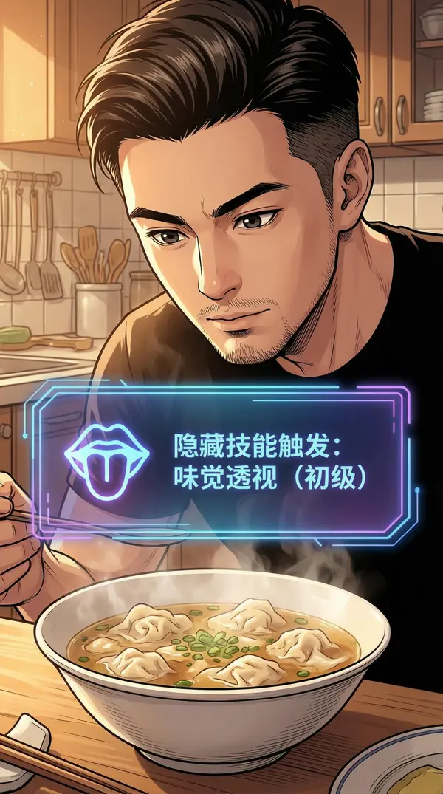
就在我快要放弃的时候，系统又弹了一个窗口。味觉透视？我看了看林小鱼的馄饨——如果我能解析她的汤底配方，是不是就能快速学会调汤？
用味觉透视偷学林小鱼的配方？
A: 不偷学。"我可以光明正大地请教。靠偷来的东西赢不了。"（正直）
B: 偷学，但之后告诉她。"先学到再说，不会亏待她。"
C: 偷学且不说。"商场如战场，信息就是武器。"
→ 菩萨心肠。朱江不会走捷径伤害帮过他的人
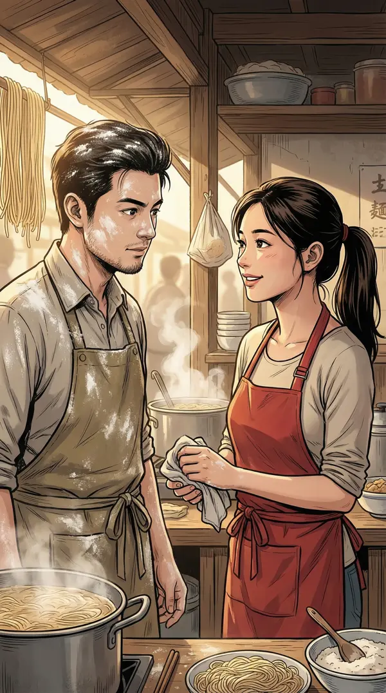
"小鱼姐，能教我调汤吗？我可以帮你干活抵学费。"她愣了一下，然后笑了："还挺实在。行，先帮我剁三斤猪肉馅，手剁，不许用机器。"
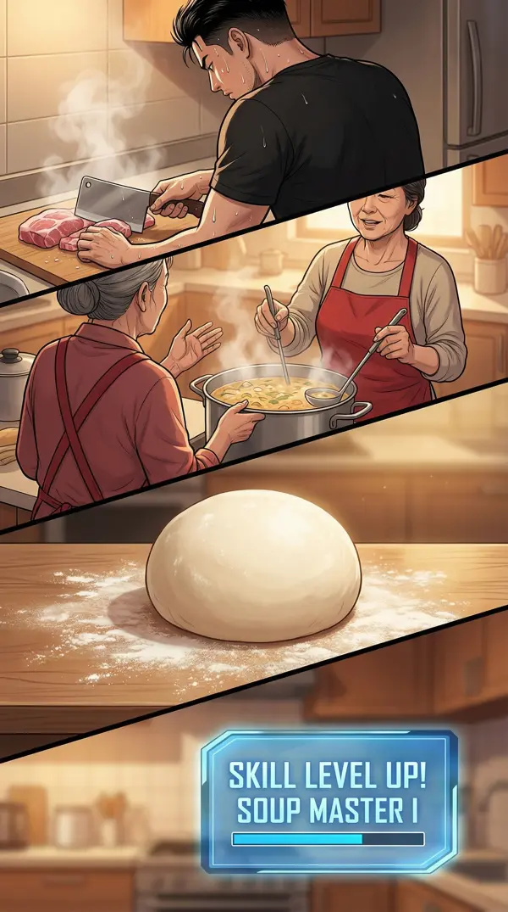
三个小时。我剁了三斤肉，吊了一锅汤，和了六次面——前五次全废了。第六次，面团终于光滑了。系统叮了一声：技能升级。那一刻的成就感，不亚于我写出第一个能跑的程序。
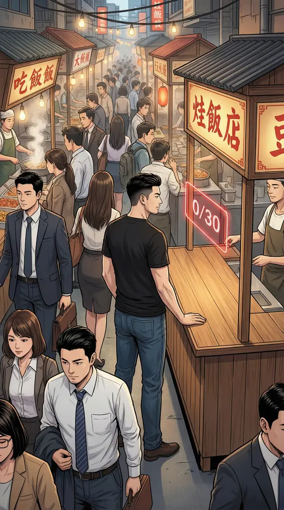
午饭时间到了。人群像数据洪流一样涌进巷子——但全部流向了其他摊位。没有一个人在我面前停下来。
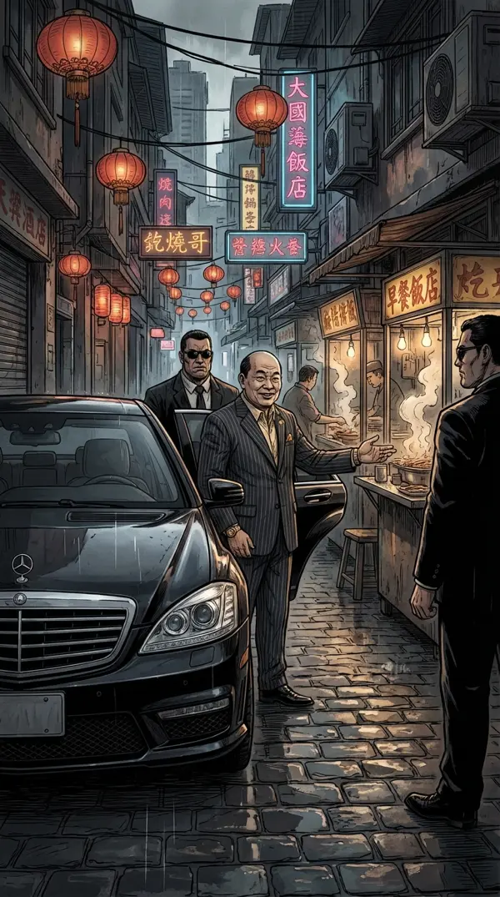
巷口停了一辆车，下来一个秃头胖子。他走到林小鱼摊前，拍了一张纸："拆迁通知。这条巷子下个月要改商业广场。你们这些摊贩，识趣的赶紧走。"林小鱼的脸一下子白了。
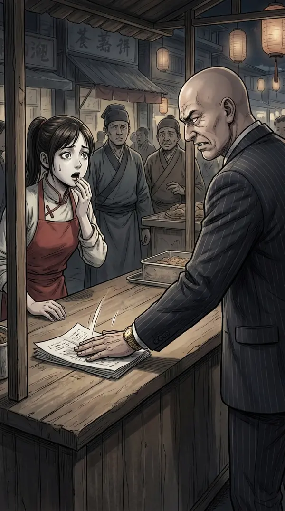
我看到林小鱼的手在抖。周围的摊贩都低下了头，没人敢吭声。赵总身后的两个保镖像两堵墙，堵在巷口。
面对赵总的威胁
A: 站出来挡在林小鱼前面。"这位老板，有话好说。先坐下吃碗面？"（以柔克刚，拉到自己主场）
B: 先不出头，暗中拍下拆迁通知研究法律漏洞（理性应对）
C: 直接怼回去："凭什么赶人？你有合法手续吗？"
→ 朱江的方式：不硬碰硬，用自己的能力化解。创业者的谈判本能
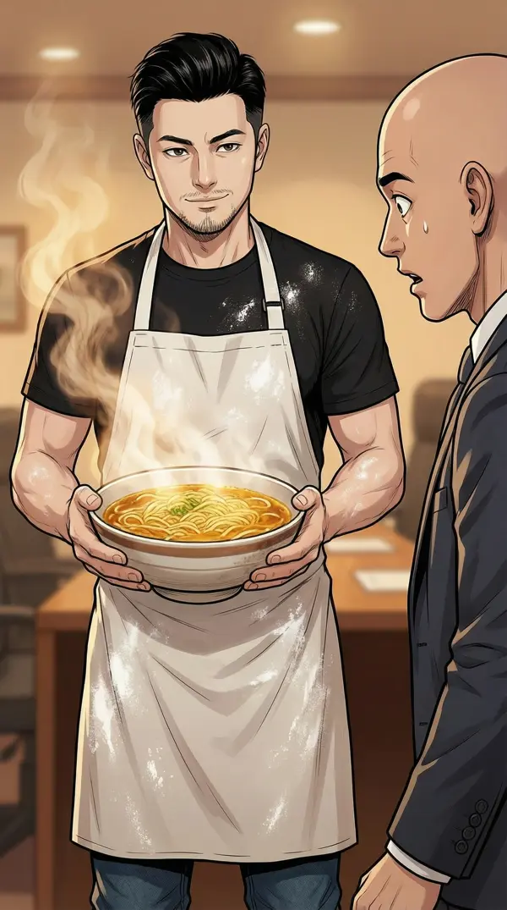
我端了一碗面过去。赵总的保镖下意识挡了一下，被他抬手拦住了——他看着面碗里金黄清澈的汤，居然坐了下来。美食的力量在于，它能让最傲慢的人也愿意先停三秒。
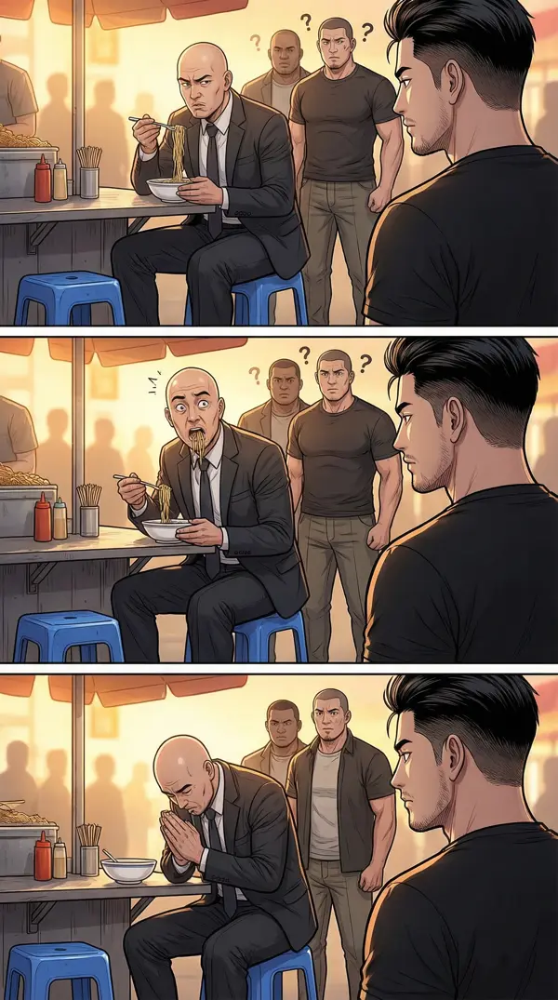
他吃了三口之后，沉默了。保镖凑过来想说什么，他摆摆手。"……这面谁做的？""我。刚学的。"他看了我一眼，那种看人的目光我太熟悉了——投资人看项目的眼神。
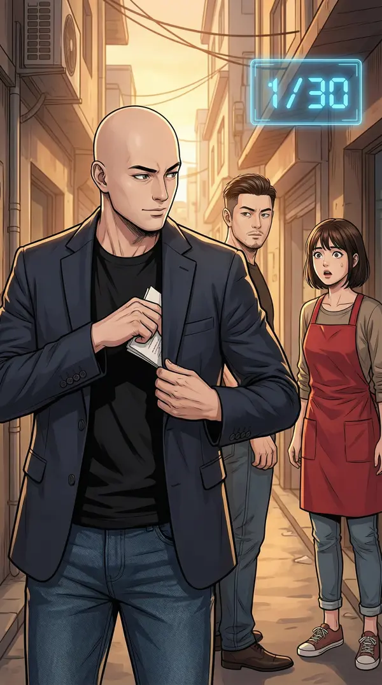
"有意思。"赵总把拆迁通知折起来塞回口袋，"今天的事先放一放。不过——下次你的面得更好吃。"他走了。林小鱼看着我，嘴巴张了好几次："你……你怎么做到的？"
场景四 · 冲刺与奖励
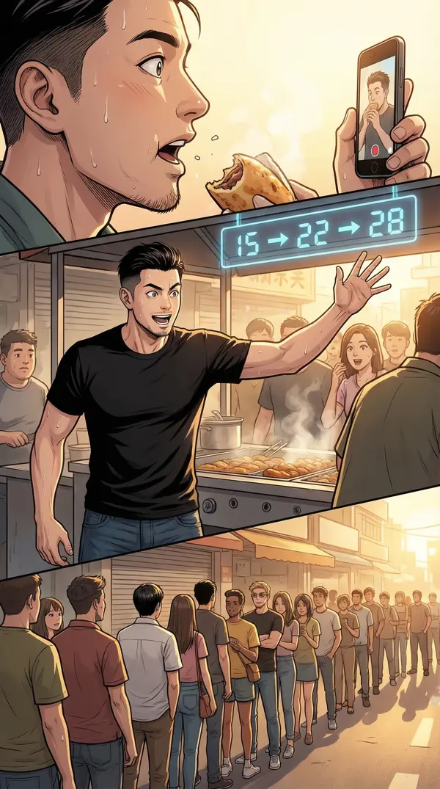
接下来两小时是我人生中最累也最爽的两小时。林小鱼帮我在巷口吆喝，第一个吃到面的大哥直接发了条朋友圈："巷子里发现一家神级面摊"。然后——人就来了。一碗接一碗，我感觉回到了创业通宵赶代码的日子。手在抖，但停不下来。
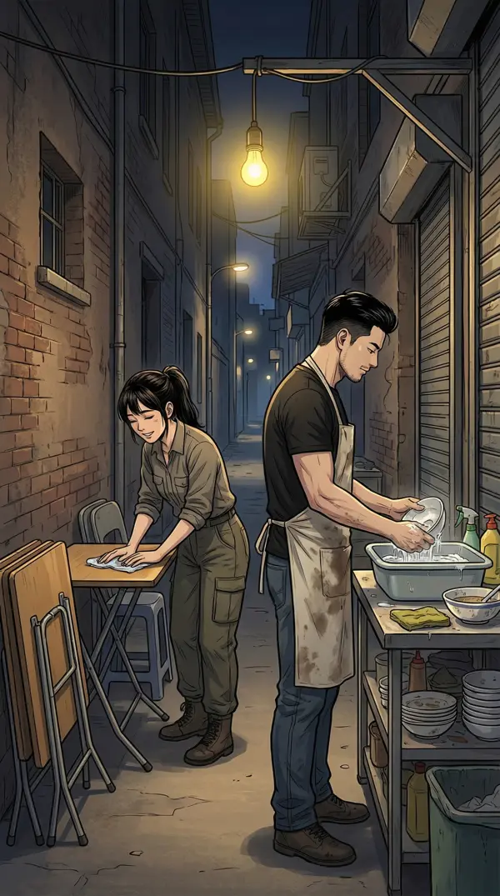
收摊的时候已经晚上九点。"你之前是做什么的？"林小鱼一边叠桌子一边问。"AI。做人工智能的。""哦，就是那种会聊天的机器人？""差不多。不过那个项目黄了。""然后就来卖面了？""……人生就是这么魔幻。"
我看着手上的烫伤。做AI的时候伤的是脑子，做面伤的是手。但说实话——今天比我过去三年做AI任何一天都充实。也许是因为，终于有人吃完以后会当着你的面说"好吃"。做AI的时候，用户的好评藏在后台数据里，冷冰冰的。一碗面端过去，那个人的笑容是真的。
任务完成后的下一步
A: "明天继续。路边摊只是起点，我要开店。"（远大目标，创业者格局）
B: "先把面做到极致再说，不急着扩张。"（匠人思维）
C: "先想办法解决赵总的拆迁问题。"（务实防御）
→ 朱江是创业者不是匠人。他的本能是做大、做平台、做生态
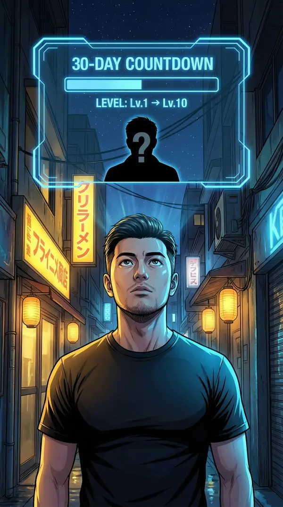
就在我准备回家的时候，系统弹了一个新任务。30天，从Lv.1升到Lv.10。而且Lv.10的试炼对手是这个城市最强的厨师。我想了想赵总今天的眼神——如果他的餐厅有一个顶级厨师……那我的对手，大概率就是赵总的人。这盘棋，比我想的要大。
我朱江，上半辈子搞AI，搞砸了。下半辈子——我要用一碗面翻盘。系统？关卡？对手？都来吧。我最擅长的，就是在别人觉得不可能的地方，硬生生趟出一条路来。明天的新任务是"黄金蛋炒饭"——听着简单。但我有种预感，简单的东西，往往最难。
第一章 · 完
第二章 · 黄金蛋炒饭的秘密 → 即将更新